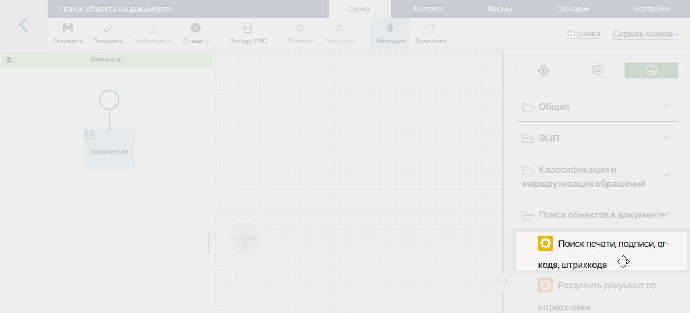
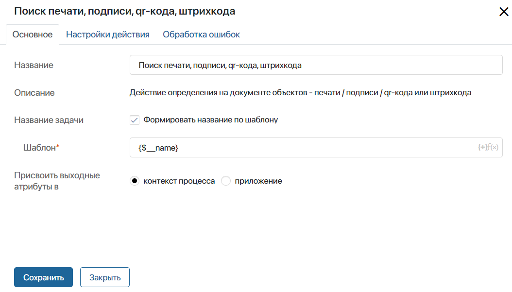
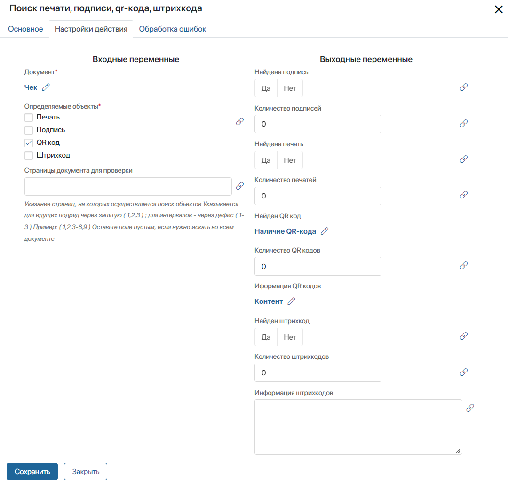
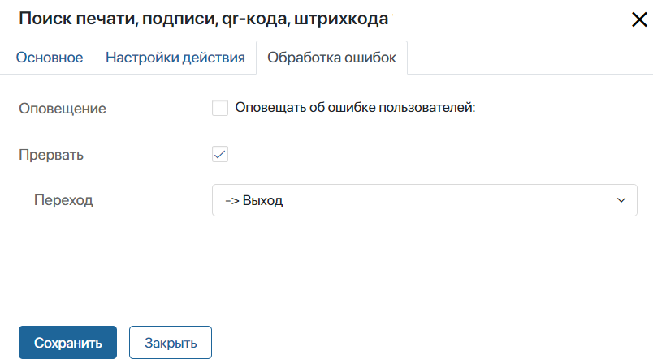
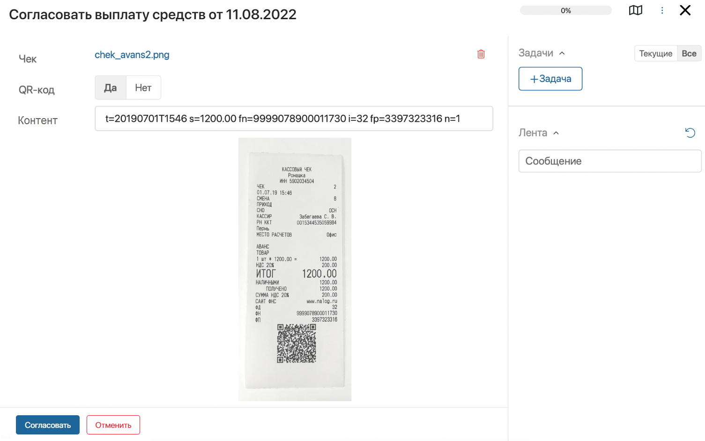

Графический элемент становится доступным в дизайнере бизнес-процессов после подключения модуля Поиск объектов в документе. Он позволяет с помощью искусственного интеллекта распознать печати, подписи, qr-коды, штрихкоды и подобные объекты на загруженном в ходе процесса документе. Результаты поиска сохранятся в контекстные переменные, и вы сможете использовать их в ходе процесса.
Например, сотрудник загружает чек с qr-кодом. Модель ИИ распознает наличие qr-кода на файле. Затем бухгалтер получит зашифрованные данные в виде свойства типа Строка и сможет занести их в отчёт.
Первичные настройки процесса
Чтобы осуществить поиск объектов, в настройках блока необходимо указать его входные и выходные атрибуты. Для этого в процессе должны присутствовать следующие контекстные переменные:
- Входные атрибуты — свойство типа Файлы, хранящее документ, на котором будет производиться поиск объектов;
- Выходные атрибуты — переменные для записи результатов поиска:
- Свойство типа Выбор «да/нет», куда будет фиксироваться наличие объекта;
- Свойство типа Число для хранения количества найденных объектов;
- Свойство типа Строка, которое необходимо для записи зашифрованных данных в qr-кодах и штрихкодах.
Для каждого объекта, по которому осуществляется поиск, используется свой набор переменных. Например, если один документ будет проверяться на наличие qr-кода и штрихкода одновременно, для каждого объекта необходимо сопоставить по три выходных атрибута.
Для сопоставления вы можете использовать свойства из контекста приложения, на уровне которого создан процесс. Например, если свойство типа Файлы заполняется на форме приложения до запуска процесса.
Для создания необходимых переменных в дизайнере бизнес-процесса перейдите на вкладку Контекст.
Настройка блока
На странице процесса на правой панели инструментов перейдите на вкладку Интеграции. Перетащите блок Поиск печати, подписи, qr-кода, штрихкода на схему и разместите его там, где потребуется найти объект на загруженном документе.

Дважды нажмите на добавленный блок на схеме процесса. Настройки графического элемента выполняются на трёх вкладках: Основное, Настройки действия, Обработка ошибок.
Вкладка «Основное»
На вкладке Основное указывается общая информация:

- Название — введите название блока, которое будет отображаться на схеме процесса;
- Название задачи — выберите опцию Формировать название по шаблону, чтобы включить контекстные переменные в название, которое исполнитель увидит в списке задач и в карточке задачи. В правом углу появившегося поля Шаблон* нажмите на значок {+} и выберите переменную. В шаблон можно добавить также дату и время с помощью функции DateTime(). Для этого нажмите на значок f(x);
- Присвоить выходные атрибуты в — эта опция является стандартной настройкой действий в бизнес-процессах, созданных на уровне модуля. С её помощью можно сопоставить контекст действия с контекстом процесса, в котором оно применяется. Для настройки блока Поиск печати, подписи, qr-кода, штрихкода эта опция является необязательной. Вы можете оставить выбранный по умолчанию вариант контекст процесса.
Вкладка «Настройки действия»
На этой вкладке настраивается логика работы модели искусственного интеллекта с загруженным документом. Необходимо заполнить поля в блоках Входные переменные и Выходные переменные.

- Входные переменные — в этом блоке указываются данные, которые будет обрабатывать модели ИИ:
- Документ* — нажмите значок
 , а затем на ссылку <Не установлено> и укажите контекстную переменную из процесса или связанного с процессом приложения, в которой хранится файл;
, а затем на ссылку <Не установлено> и укажите контекстную переменную из процесса или связанного с процессом приложения, в которой хранится файл; - Определяемые объекты* — выберите объекты, которые необходимо распознать на документе;
- Страницы документа для проверки — укажите страницы, на которых будет производится поиск объектов. Перечислите номера страниц через запятую (1, 2, 3) или укажите интервал через дефис (1-3). Если нужно выполнить поиск во всём документе, оставьте поле пустым.
Если искомый объект и конкретные страницы документа определяются ранее по ходу процесса, вы можете указать переменные, в которые сохраняется данная информация. Для этого напротив названия каждого из полей нажмите на значок  , а затем на ссылку <Не установлено>.
, а затем на ссылку <Не установлено>.
- Выходные переменные — укажите свойства из контекста бизнес-процесса или связанного приложения, в которые будут записаны результаты поиска каждого выбранного объекта.
Например, если на документе ведётся поиск только qr-кода, нажмите значок  и сопоставьте следующие поля с переменными процесса:
и сопоставьте следующие поля с переменными процесса:
- Найден QR код — укажите переменную типа Выбор «да/нет»;
- Количество QR кодов — используется переменная типа Число;
- Информация QR кодов — выберите переменную типа Строка.
Настройки для других объектов задаются аналогичным образом. Для каждого объекта используется свой набор созданных в контексте переменных.
Вкладка «Обработка ошибок»
На этой вкладке необходимо указать, по какой ветке направится ход бизнес-процесса при возникновении ошибки в работе блока. Также вы можете настроить оповещение пользователей об ошибке.

- Оповещение — включите опцию, а затем укажите пользователей, которым будет отправляться оповещение об ошибке в процессе. Выбрать можно пользователя, группу пользователей, элемент оргструктуры или указать контекстную переменную, например, инициатора процесса;
- Прервать — для корректной работы блока необходимо включить опцию, а затем в поле Переход указать, по какой ветке направится процесс в случае ошибки. Указанный в этих настройках переход будет отмечен на схеме процесса значком
 .
.
После того как все настройки завершены, нажмите кнопку Сохранить.
Результат поиска объекта
Результат поиска qr-кода на форме задачи может выглядеть следующим образом:

На форме задачи отображается файл чека, загруженный ранее в ходе процесса. Зашифрованная информация в найденном qr-коде сохранена в переменной типа Строка, указанной как выходной атрибут в настройках блока. В примере эта переменная названа Контент. Вы можете скопировать значения переменной или использовать её в ходе процесса.